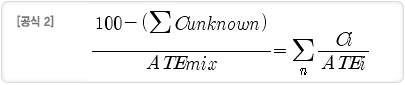

급성독성 물질
- 1. 혼합물 자체에 대한 급성독성 자료가 있는 경우
단일물질의 분류기준(단일물질의 분류기준 표 참조)과 같다.
- 2. 혼합물 자체에 대한 자료는 없으나 가교원리를 적용할 수 있는 경우
각 노출경로에 대하여 <별표1>의 1.2 가목부터 바목까지에 따른 가교원리를 적용하여, 해당 혼합물을 급성독성 구분 1부터 구분 4까지로 분류한다.
[표 1.1] 용량범위로 산출된 시험 값 또는 급성독성 구분으로부터 변환된 급성독성 추정치 노출경로 구분 또는 시험적으로 얻어진 급성독성 범위 변환된 급성독성 추정치 경구
(㎎/㎏ 체중)0 < 구분 1 ≤ 5 0.5 5 < 구분 2 ≤ 50 5 50 < 구분 3 ≤ 300 100 300 < 구분 4 ≤ 2000 500 경피
(㎎/㎏ 체중)0 < 구분 1 ≤ 50 5 50 < 구분 2 ≤ 200 50 200 < 구분 3 ≤ 1000 300 1000 < 구분 4 ≤ 2000 1100 흡입 가스
(ppm)0 < 구분 1 ≤ 100 10 100 < 구분 2 ≤ 500 100 500 < 구분 3 ≤ 2500 700 2500 < 구분 4 ≤ 20000 4500 증기
(㎎/L)0 < 구분 1 ≤ 0.5 0.05 0.5 < 구분 2 ≤ 2.0 0.5 2.0 < 구분 3 ≤ 10.0 3 10.0 < 구분 4 ≤ 20.0 11 분진/미스트
(㎎/L)0 < 구분 1 ≤ 0.05 0.005 0.05 < 구분 2 ≤ 0.5 0.05 0.5 < 구분 3 ≤ 1.0 0.5 1.0 < 구분 4 ≤ 5.0 1.5 - 3. 혼합물 자체에 대한 자료는 없으나 구성성분에 대한 자료가 있는 경우
- (a) 모든 구성성분에 대한 자료가 있거나 예측이 가능한 경우
[공식 1]에 따라 혼합물의 경구, 경피 또는 흡입 급성독성 추정치(ATEmix)를 계산하여 급성독성 물질의 분류기준(단일물질의 급성독성 물질 분류기준 참조)에 따라 분류한다, 다만, 혼합물의 급성독성 추정치는 혼합물의 LD50이나 LC50으로 본다.

이 공식에서 Ci는 성분 i의 농도를, ATEi는 성분 i의 급성독성 추정치를 의미하며, 성분의 수가 n개일 때, i는 1부터 n까지에 해당한다.
※ 혼합물 구성성분의 ATE는 다음을 이용하여 유도한다.
- LD50(경구, 경피)/LC50(흡입)
- 용량범위 시험의 결과인 경우 표 1.1로부터 적절히 환산된 값, 또는
- 구분을 알고 있는 경우 표 1.1로부터 적절히 환산된 값
- (b)일부 구성성분에 대한 자료만 있는 경우
- 가) 구성성분 중 급성독성을 모르는 성분의 총합이 10% 이하인 경우
[공식 1]에 따라 혼합물의 ATE를 계산한 다음 표 1.1에 따라 분류하되, 급성독성을 모르는 성분의 함량을 별도 표시한다.
- 나) 구성성분 중 급성독성을 모르는 성분의 총합이 10% 초과인 경우
[공식 2]에 따라 혼합물의 ATE를 계산한 다음 표 1.1에 따라 분류하되, 급성독성을 모르는 성분의 함량을 별도 표시한다.

이 공식에서 Ci는 성분 i의 농도를, ATEi는성분 i의 급성독성 추정치를, 그리고 Cunknown은 급성독성을 모르는 성분을 의미한다.
분류기준에 관한 추가 사항
-
- 1. 흡입독성에 대한 한계농도는 4시간 노출시험 기준이다. 1시간 노출시험에서 얻어진 기존의 시험자료를 변환해서 사용할 경우에는, 가스 및 증기는 2로 나누고 분진과 미스트는 4로 나눈다.
- 2. 흡입독성에 대한 단위는 흡입되는 물질의 형태에 따라 달라진다. 분진 및 미스트는 ㎎/L로 나타내며, 가스는 ppm으로 나타낸다. 액체상 및 증기상이 혼합되어 있는 증기는 시험하기 어렵기 때문에, 표에서는 값을 ㎎/L 단위로 나타낸다. 다만, 화학물질이 시험환경에서 거의 가스 상에 가까운 증기로 구성된 경우에는, 가스에 대한 분류기준을 따른다.
- 3. 경구 및 흡입노출에 의한 급성독성 평가에 우선 적용되는 시험동물 종은 흰쥐이며, 급성 경피독성에서는 흰쥐 또는 토끼이다.
- 4. 흡입독성 시험결과에서 부식성을 나타내는 정보가 있다면, 물질 또는 혼합물은 호흡기도에 부식성이 있는 것으로 표시한다. 호흡기도에 대한 부식성은 피부 부식성과 유사한 1회, 제한된 기간 동안 노출후의 호흡기도 조직의 파괴로 정의된다. 이는 점막의 파괴도 포함한다.
- 5. 분류된 혼합물이 다른 혼합물의 구성성분으로 사용될 경우에는, 그 혼합물에 대한 실제 또는 유추된 급성독성 추정치를 [공식 1] 또는 [공식 2]에 사용하여 새로운 혼합물의 분류를 계산할 수 있다.
피부 부식성 또는 자극성 물질
- 1. 혼합물 자체에 대한 피부 부식성 또는 자극성 자료가 있는 경우
단일물질의 분류기준(단일물질의 분류기준 표 참조)과 같다.
- 2. 혼합물 자체에 대한 자료는 없으나 가교원리를 적용할 수 있는 경우
[별표1] 제1.2장의 가목부터 바목에 따른 가교원리를 적용하여, 해당 혼합물을 피부 부식성(구분 1) 또는 피부 자극성(구분 2)으로 분류한다.
- 3. 혼합물 자체에 대한 자료는 없으나 구성성분에 대한 자료가 있는 경우
- (a) 가산 방식을 적용할 수 있는 경우
혼합물 중 피부 부식성(구분 1) 또는 피부 자극성(구분 2) 성분이 이들의 농도와 부식성 또는 자극성 강도에 비례하여 혼합물 전체의 부식성 또는 자극성에 기여하는 경우에, 혼합물의 분류기준은 아래 표 2.1(a)와 같다.
[표 2.1(a)] 가산 방식을 적용할 수 있는 경우에 혼합물의 분류기준 구분 분류기준 1
(피부 부식성)피부 부식성(구분1)인 성분의 총 함량이 5% 이상인 혼합물 2
(피부자극성)- ①피부 부식성(구분1)인 성분의 총 함량이 1% 이상 5% 미만인 혼합물 또는,
- ②피부 자극성(구분2)인 성분의 총 함량이 10% 이상인 혼합물 또는,다음의 합이 10% 이상인 혼합물
- ③다음의 합이 10% 이상인 혼합물
- (ⅰ) 어류에 대한 NOEC 또는 ECx이 0.1 ㎎/L 초과 1 ㎎/L 이하. 또는
- (ⅱ) 갑각류에 대한 NOEC 또는 ECx이 0.1 ㎎/L 초과 1 ㎎/L 이하. 또는,
- (ⅲ) 조류 또는 기타 수생식물에 대한 NOEC 또는 ECx이 0.1 ㎎/L 초과 1 ㎎/L 이하.
- (a) 가산 방식을 적용할 수 없는 경우
강산이나 강염기, 기타 무기염류, 알데히드류, 페놀류, 계면활성제 또는 이와 유사한 특징을 갖는 물질 중 표 2.1(a)의 가산 방식을 적용할 수 없는 성분을 함유한 혼합물은 표 2.1(b)에 따라 피부 부식성 또는 피부 자극성을 분류한다.
[표 2.1(a)] 가산 방식을 적용할 수 있는 경우에 혼합물의 분류기준 구분 분류기준 1
(피부 부식성)- ①pH 2 이하인 성분의 함량이 1% 이상인 혼합물 또는,
- ②pH 11.5 이상인 성분의 함량이 1% 이상인 혼합물 또는,
- ③기타 가산 방식이 적용되지 않는 다른 피부 부식성(구분 1)인 성분의 함량이 1% 이상인 혼합물
2
(피부자극성)피부 부식성(구분1)인 성분의 총 함량이 5% 이상인 혼합물
- (a) 가산 방식을 적용할 수 있는 경우
분류기준에 관한 추가 사항
-
- 1. 피부 부식성 또는 피부 자극성 분류는 동물시험 자료 외에 단일물질의 피부 부식성/자극성 분류기준(표 참조)에 나타난 인체나 동물에 대한 경험, pH, 구조활성관계, 구조 특성관계나 in vitro 자료를 최대한 활용한다.
- 2. pH 한계범위 이지만 피부 부식성이 아니라는 판단을 위해서는 완충력이나 시험관내 시험자료와 같은 추가 자료가 있어야 한다.
- 3. 국제적으로 승인되고 타당성이 검증된 시험관내 피부 부식성 시험방법으로는 OECD 430과 OECD 431이 있다.
- 4. 표 2.1(a) 및 2.1(b)에 규정된 함량 한계를 초과하면서도 피부 부식성 또는 피부 자극성이 없다는 명백한 증거가 있는 경우는 해당 혼합물을 피부 부식성 또는 피부 자극성으로 분류하지 않아도 된다. 이 반대의 경우는 피부 부식성 또는 피부 자극성으로 분류한다.
심한 눈 손상 또는 눈 자극성 물질
- 1. 혼합물 자체에 대한 피부 부식성, 심한 눈 손상 또는 눈 자극성 자료가 있는 경우
단일물질의 분류기준(단일물질의 분류기준 표 참조)과 같다.
- 2. 혼합물 자체에 대한 자료는 없으나 가교원리를 적용할 수 있는 경우
[별표1] 제1.2장의 가목부터 바목까지에 따른 가교원리를 적용하여, 해당 혼합물을 심한 눈 손상(구분 1) 또는 눈 자극성(구분 2)으로 분류한다.
- 3. 혼합물 자체에 대한 자료는 없으나 구성성분에 대한 자료가 있는 경우
- (a) 가산 방식을 적용할 수 있는 경우
혼합물 중 피부 부식성(구분 1), 심한 눈 손상(구분 1) 또는 눈 자극성(구분 2) 성분이 이들의 농도와 부식성 또는 자극성 강도에 비례하여 혼합물 전체의 부식성 또는 자극성에 기여하는 경우에, 혼합물의 분류기준은 아래 표 3.1(a)와 같다.
[표 3.1(a)] 가산 방식을 적용할 수 있는 경우에 혼합물의 분류기준 구분 분류기준 1
(심한 눈 손상)- ①심한 눈 손상(구분1) 또는 피부 부식성(구분1)인 성분의 총 함량이 3% 이상인 혼합물 또는,
- ②다음의 합이 3% 이상인 혼합물
- (ⅰ) 피부 부식성(구분1)인 성분의 총 함량(%)과
- (ⅱ) 심한 눈 손상(구분1)인 성분의 총 함량(%)
2
(눈 자극성)- ①심한 눈 손상(구분1) 또는 피부 부식성(구분1)인 성분의 총 함량이 1% 이상 3% 미만인 혼합물 또는,
- ②눈 자극성(구분2)인 성분의 총합이 10% 이상인 혼합물 또는,
- ③다음의 합이 10% 이상인 혼합물
- (ⅰ) 심한 눈 손상(구분1)인 성분의 총 함량(%)에 가중치 10을 곱한 값과
- (ⅱ) 눈 자극성(구분2)인 성분의 총 함량(%) 또는,
- ④다음의 합이 1% 이상 3% 미만인 혼합물
- (ⅰ) 심한 눈 손상(구분1)인 성분의 총 함량(%)과
- (ⅱ) 피부 부식성(구분1)인 성분의 총 함량(%) 또는,
- ⑤다음의 합이 10% 이상인 혼합물
- (b)가산 방식을 적용할 수 없는 경우
강산이나 강염기, 기타 무기염류, 알데히드류, 페놀류 및 계면활성제 또는 이와 유사한 특징을 갖는 물질 중 표 3.1(a)의 가산 방식을 적용할 수 없는 성분을 함유한 혼합물은 표 3.1(b)에 따라 심한 눈 손상 또는 눈 자극성을 분류한다.[표 3.1(b)] 가산 방식을 적용할 수 없는 경우에 혼합물의 분류기준 구분 분류기준 1
(심한 눈 손상)- ①pH 2 이하인 성분의 함량이 1% 이상인 혼합물
- ②pH 11.5 이상인 성분의 함량이 1% 이상인 혼합물
- ③기타 가산 방식이 적용되지 않는 다른 심한 눈 손상(구분 1)인 성분의 함량이 1% 이상인 혼합물
2
(눈 자극성)산, 알칼리 등 가산 방식이 적용되지 않는 다른 눈 자극성(구분 2)인 성분의 함량이 3% 이상인 혼합물
- (a) 가산 방식을 적용할 수 있는 경우
분류기준에 관한 추가 사항
-
- 1.기존의 사람 또는 동물로부터의 경험에 근거하여 피부 및 눈 모두에 영향을 줄 수 있는 심한 눈 손상, 부식성 및 자극성을 확인할 수 있다.
- 2.피부 부식성 물질을 동물의 눈에 주입시키면 안 된다. 이와 같은 물질은 심한 눈 손상을 유발하는 것으로 간주한다(눈 구분 1)
- 3.다른 관련 정보가 없다면, 토끼를 이용한 눈 자극성 시험을 수행하기에 전에, 필수적으로 피부 부식성을 평가한다. 가능하다면, 타당성이 검증되어 승인된 in vitro 피부 부식성 시험을 통해 정보를 얻는다.
- 4.만약 토끼 한 마리를 이용한 제한된 시험에서 심한 눈 손상이 나타난다면, 더 이상의 시험은 필요하지 않다(눈 구분 1).
- 5. 2마리의 동물(심한 영향을 평가하기 위하여 사용한 1마리 포함하여)을 이용한 자극성 시험에서, 일관되게 분명한 자극성 또는 분명한 비자극성 반응을 나타낸다면, 자극성 시험은 2마리만 사용해도 된다. 반응이 서로 다르거나 경계선상에 있는 경우에는, 세 번째 동물이 필요하다.
호흡기 또는 피부 과민성 물질
- 1.혼합물 자체에 대한 호흡기 또는 피부 과민성 자료가 있는 경우
단일물질의 분류기준(단일물질의 분류기준 표 참조)과 같다.
- 2.혼합물 자체에 대한 자료는 없으나 가교원리를 적용할 수 있는 경우
[별표1] 제1.2장의 가목, 나목, 마목 및 바목에 따른 가교원리를 적용하여, 해당 혼합물을 호흡기 과민성(구분 1) 또는 피부 과민성(구분 1)으로 분류한다.
- 3.혼합물 자체에 대한 자료는 없으나, 구성성분에 대한 자료가 있는 경우
[표 4.1] 혼합물에 대한 피부 과민성 또는 호흡기 과민성 분류기준 구분 분류기준 1
(호흡기 과민성)호흡기 과민성(구분 1)인 성분의 함량이 0.2%(기체) 이상 또는 1.0%(고체 또는 액체) 이상인 혼합물 1
(피부 과민성)피부 과민성(구분 1)인 성분의 함량이 1.0% 이상인 혼합물
분류기준에 관한 추가 사항
- 1. 물질이 사람에게 특이적 호흡기 과민성을 유발할 수 있다는 사람에 대한 증거에는, 다음과 같은 것이 있다.
- (a) 아래와 같은 항목을 포함하여 그 밖의 뒷받침하는 증거에 의해 확인된, 임상 이력 및 물질의 노출과 관계된 적절한 폐 기능 검사로부터 얻은 데이터
- - in vivo 면역학적 시험(예, 피부단자시험)
- - in vitro 면역학적 시험(예, 혈청학적 분석)
- - 반복 저 농도 자극, 약리학적 매개 작용과 같이, 면역학적 작용 기전이 아직 밝혀지지 않은 그 외의 특이적 과민 반응을 나타내는 시험
- - 호흡기 과민성을 유발하는 것으로 알려진 물질과 관계있는 화학 구조
- (b) 특이적 과민 반응을 측정하기 위해 공인된 방법에 따라 실시된, 물질에 대한 기관지유발시험에서 양성 결과
- (a) 아래와 같은 항목을 포함하여 그 밖의 뒷받침하는 증거에 의해 확인된, 임상 이력 및 물질의 노출과 관계된 적절한 폐 기능 검사로부터 얻은 데이터
- 2. 물질이 사람에 흡입되면 과민성을 유발할 수 있는지를 나타내는 적절한 동물 시험 자료에는, 다음과 같은 것이 있다.
- (a) 마우스를 이용한 면역글로불린 E (IgE) 및 그 외에 특이적 면역학적 지표의 측정
- (b) 기니피그에서의 특이적 폐 반응
- 3. 물질을 피부 과민성 물질로 분류하는 증거에는, 다음과 같은 것이 있다.
- (a) 하나 이상의 피부과 병원에서 얻어진 패치시험에서 양성 데이터
- (b) 대상물질로 인해 알레르기성 접촉 피부염이 생긴다는 역학 연구. 사례수가 적을지라도 특징적인 증상을 나타내는 노출 사례의 비율이 높을 경우에는 특히 주의하여 확인한다.
- (c) 적절한 동물 시험에서 얻어진 양성 데이터
- (d) 사람에 대한 실험적 연구에서 얻어진 양성 데이터
- (e) 일반적으로 하나 이상의 피부과 병원에서 얻어진 알레르기성 접촉성 피부염에 대한 잘 보고된 사례
- 4. 앞에서 언급된 조건 중 어느 하나도 일치하지 않는다면, 그 물질은 접촉 과민성 물질로 분류할 필요가 없다. 그러나 아래에 기술된 접촉 과민성에 대한 두 가지 이상의 지표를 조합하면 결과가 달라질 수도 있다.
- (a) 알레르기성 접촉 피부염의 단발적 사례
- (b) 제한적으로 검정된 역학조사. 예를 들어, 우연성, 치우침, 교란요인 등을 합리적인 확신을 갖고 제외할 수 없는 경우
- (c) 기존의 지침에 따라 수행된 동물시험 자료로, 아래 (5)의 동물시험에서 기술한 양성의 판정기준을 충족하지는 못하지만, 의미가 있다고 생각할 수 있는 한계수준에는 충분히 가까운 경우
- (d) 비 표준화된 방법으로부터 얻은 양성 데이터
- (e) 구조 유사물질로부터 얻은 양성 결과
- 5. 피부 과민성에 대하여 항원보강제를 이용하는 형태의 시험이 실시되는 경우, 적어도 30% 이상의 동물에서 반응이 있으면 양성으로 판정한다. 항원보강제를 이용하지 않는 시험의 경우에는, 적어도 15% 이상의 동물에서 반응이 있으면 양성으로 판정한다. 국소림프절시험(Local Lymph Node Assay)에서는 자극지수(SI)가 3이상이면 양성으로 판정한다. 피부 과민성 시험법은 OECD 지침서 406 (the Guinea Pig Maximization test and the Buehler guinea pig test) 및 지침서 429 (Local Lymph Node Assay)에 기술되어 있다. 그 밖에 잘 검증되어 과학적 타당성을 얻는 다른 방법도 사용할 수 있다.
생식세포 변이원성 물질
- 1.혼합물의 구성성분에 대한 생식세포 변이원성 자료가 있는 경우
생식세포 변이원성 구분 1 또는 구분 2에 해당하는 성분이 혼합물에 존재하는 경우는, 우선적으로 표 5.1에 따라 해당 혼합물을 생식세포 변이원성으로 분류한다.
[표 5.1] 혼합물에 대한 생식세포 변이원성 분류기준 구분 분류기준 1 생식세포 변이원성(구분 1)인 성분의 함량이 0.1% 이상인 혼합물 2 생식세포 변이원성(구분 2)인 성분의 함량이 1.0% 이상인 혼합물 - 2.혼합물 자체에 대한 생식세포 변이원성 자료가 있는 경우
(1)에 따라 해당 혼합물이 생식세포 변이원성으로 분류되지 않는 경우에 한하여 단일물질의 생식세포 변이원성 분류기준 표에 의하여 분류한다. 다만, 해당 혼합물을 생식세포 변이원성으로 분류하지 않거나 (1)에서의 구분에 비해 낮은 구분으로 분류하는 경우에는, 해당 시험방법의 적절성, 민감성 등에 대하여 충분한 증거가 있어야 한다.
- 3.혼합물 자체에 대한 자료는 없으나 가교원리를 적용할 수 있는 경우
(1) 및 (2)을 순차적으로 적용한 결과 해당 혼합물이 생식세포 변이원성으로 분류되지 않는 경우에 한하여, [별표1] 1.2장의 가목, 나목 및 마목에 따른 가교원리를 적용하여 구분 1 및 구분 2로 분류한다.
분류기준에 관한 추가 사항
-
- 1.돌연변이란 세포내 유전물질의 양 또는 구조에 영구적인 변화를 의미한다. "돌연변이"란 용어는 표현형 수준에서 명백한 유전성 유전변화, 또는 근원적인 DNA 변이 (예. 특정염기쌍 변화 및 염색체 전좌) 모두에 적용된다. "변이원성" 및 "변이원성물질"s이란 용어는 세포 또는 생물체 집단에 돌연변이 발생을 증가시키는 물질에 사용된다.
- 2.보다 일반적인 용어인 "유전독성물질" 및 "유전독성"이란 용어는, 정상적인 복제과정을 방해하여 DNA를 손상시키거나 비 생리적인 방법(일시적으로)으로 DNA 복제를 변화시키는 것을 포함해서, DNA의 구조, 정보내용 또는 분리를 변화시키는 물질 또는 과정에 적용된다. 일반적으로 유전독성시험 결과는 변이원성 작용에 대한 지표로 이용된다.
- 3. 생식세포 변이원성은 주로 자손에게 유전될 수 있는 사람의 생식세포에 돌연변이를 일으킬 수 있는 화학물질과 관계된다. 그러나 시험관내 변이원성/유전독성시험 및 생체내(in vivo) 포유류 체세포를 이용한 시험도, 물질과 혼합물을 생식세포 변이원성으로 분류할 때 고려된다.
- 4. 사람의 생식세포에 대한 유전적 영향은, 잘 수행되고 충분히 검증된 시험에 근거하여 분류되며, OECD 시험 지침서에서 정한 방법이 선호된다.
- 5. 포유동물을 이용한 유전성 생식세포 변이원성시험의 예는 아래와 같다.
- (a)설치류 우성치사 돌연변이시험(OECD 478)
- (b)마우스 유전성 전좌시험(OECD 485)
- (c)마우스 특정 유전자 전좌시험
- 6. 포유동물을 이용한 체세포 변이원성시험의 예는 아래와 같다.
- (a)포유류 골수 염색체이상시험(OECD 475)
- (c)마우스 스폿 시험(OECD 484)
- (c)포유류 적혈구 소핵시험(OECD 474)
- 7. 생식세포 변이원성/유전독성 시험의 예는 아래와 같다.
- 변이원성시험
- (a)포유류 정원세포(spermatogonial) 염색체이상시험(OECD 483)
- (b)정자세포(spermatid) 소핵시험
- 유전독성시험- (a)정원세포에서의 자매염색분체교환시험
- (b)고환세포에서의 UDS 시험
- 8. 체세포 유전독성시험의 예는 아래와 같다.
- (a)생체내(in vivo) 간 UDS시험(OECD 486)
- (b)포유류 골수 자매염색분체교환(SCE) 시험
- 9.시험관내(in vitro) 변이원성시험의 예는 아래와 같다.
- (a)시험관내 포유류 염색체이상시험(OECD 473)
- (b)시험관내 포유류세포 유전자돌연변이시험(OECD 476)
- (c)박테리아 복귀돌연변이시험(OECD 471)
발암성 물질
- 1.혼합물의 구성성분에 대한 발암성 자료가 있는 경우
발암성 구분 1 또는 구분 2에 해당하는 성분이 혼합물에 존재하는 경우는, 우선적으로 표 6.1에 따라 해당 혼합물을 발암성으로 분류한다.
[표 6.1] 혼합물에 대한 발암성 분류기준 구분 분류기준 1 발암성(구분 1)인 성분의 함량이 0.1% 이상인 혼합물 2 발암성(구분 2)인 성분의 함량이 1.0% 이상인 혼합물 - 2.혼합물 자체에 대한 발암성 자료가 있는 경우
(1)에 따라 해당 혼합물이 발암성으로 분류되지 않는 경우에 한하여 단일물질의 발암성 분류기준 표에 의하여 분류한다. 다만, 해당 혼합물을 발암성으로 분류하지 않거나 (1)에서의 구분에 비해 낮은 구분으로 분류하는 경우에는, 해당 시험방법의 적절성, 민감성 등에 대하여 충분한 증거가 있어야 한다.
- 3. 혼합물 자체에 대한 자료는 없으나 가교원리를 적용할 수 있는 경우
(1) 및 (2)을 순차적으로 적용한 결과 해당 혼합물이 발암성으로 분류되지 않는 경우에 한하여, [별표1] 1.2장의 가목, 나목 및 마목에 따른 가교원리를 적용하여 구분 1 및 구분 2로 분류한다.
분류기준에 관한 추가 사항
- 1.발암성 물질의 분류는 두 종류의 상호 관련된 판단, 즉 증거의 세기에 대한 평가와 증거의 가중치 결정이 필요하다.
- 2.증거의 세기는, 사람 및 동물 연구에서 종양수의 계측 및 그 통계적 유의 수준에 의해 결정된다.
- (a)사람에게 충분한 증거란 사람에서의 노출과 암 발생과의 인과관계를 증명하는 것이며, 동물에 대한 충분한 증거란 물질과 종양 발생률 증가 사이에 인과관계를 보이는 것이다.
- (b)사람에게 제한된 증거란 노출과 암 사이에 양성의 관계가 나타나지만 인과관계를 증명할 수 없는 경우이며, 동물에 대한 제한된 증거란 제공된 데이터가 발암성을 암시하지만 증거가 충분하지 않은 경우이다.
- 3.추가 고려 사항(증거의 가중치): 물질이 사람에게 발암 유해성을 나타내는 전체적인 가능성에 영향을 주는 다른 많은 요인을 고려한다.
- (a)전체적인 우려 수준을 평가할 때에 고려될 수 있는 중요한 요인은 아래와 같다.
- - 종양의 종류 및 배경 발생률
- - 여러 부위에 있어서의 반응
- - 병변으로부터 악성 종양으로의 진행
- - 단축된 종양 발생 잠복 기간
- (b)우려 수준을 증가시키거나 감소시킬 수 있는 추가 요인은 아래와 같다.
- - 반응이 암수 한쪽에서 나타나는 것인지 양쪽 모두에서 나타나는지
- - 반응이 단일 종에서 나타나는지 몇 개의 종에서 나타나는지
- - 발암성의 명확한 증거가 있는 화학물질과 구조적으로 유사한지 아닌지
- - 노출 경로
- - 시험 동물과 사람 사이의 흡수, 분포, 대사 및 배설의 비교
- - 시험 용량에서 과독성에 의한 교란요인이 있을 가능성
- - 변이원성, 성장 자극을 수반한 세포 독성, 유사분열 유발성, 면역 억제 등의 작용 메커니즘 및 사람에게 관련성
- (c)생체내에서 변이원성에 대한 증거는 화학물질이 발암성을 가질 가능성을 나타낸다.
- (d)발암성 시험을 실시하지 않았지만, 구조 유사체에 대한 종양 데이터와 함께, 공통의 주요 대사산물 생성 등과 같은 그 외의 중요한 요인을 검토하여 얻은 실질적인 증거에 근거해서 구분 1 또는 구분 2로 분류되는 화학물질도 있다(예, 벤지딘계 염료).
- (a)전체적인 우려 수준을 평가할 때에 고려될 수 있는 중요한 요인은 아래와 같다.
생식독성 물질
- 1. 혼합물의 구성성분에 대한 생식독성 자료가 있는 경우
생식독성 구분 1, 구분 2 또는 추가구분에 해당하는 성분이 혼합물에 존재하는 경우는, 우선적으로 표 7.1에 따라 해당 혼합물을 생식독성으로 분류한다.
[표 7.1] 혼합물에 대한 생식독성 분류기준 구분 분류기준 1 생식독성(구분 1)인 성분의 함량이 0.3% 이상인 혼합물 2 생식독성(구분 2)인 성분의 함량이 3.0% 이상인 혼합물 추가 구분 생식독성(추가 구분)인 성분의 함량이 0.3% 이상인 혼합물 - 2.혼합물 자체에 대한 생식독성 자료가 있는 경우
(1)에 따라 해당 혼합물이 생식독성으로 분류되지 않는 경우에 한하여 단일물질의 생식독성 분류기준 표에 의하여 분류한다. 다만, 해당 혼합물을 생식독성으로 분류하지 않거나 (1)에서의 구분에 비해 낮은 구분으로 분류하는 경우에는, 해당 시험방법의 적절성, 민감성 등에 대하여 충분한 증거가 있어야 한다.
- 3. 혼합물 자체에 대한 자료는 없으나 가교원리를 적용할 수 있는 경우
(1) 및 (2)을 순차적으로 적용한 결과 해당 혼합물이 생식독성으로 분류되지 않는 경우에 한하여, [별표1] 1.2장의 가목, 나목 및 마목에 따른 가교원리를 적용하여 구분 1, 구분 2 또는 추가구분으로 분류한다.
분류기준에 관한 추가 사항
- 1. 성적기능 및 생식 능력에 대한 유해영향
- (a)성적기능 또는 생식능력을 저해하는 화학물질의 모든 영향이 포함된다. 여기에는 암수 생식기관의 변화, 생식가능 연령의 개시시기, 생식체의 생성 및 이동, 생식주기의 정상도, 성적 행동, 생식능력, 분만, 임신결과, 생식기능의 조기 노화, 또는 정상적인 생식계통에 의존하는 다른 기능의 변화 등이 포함되지만, 반드시 이것에 한정되는 것은 아니다.
- (b)수유에 대한 또는 수유를 통한 유해영향도 생식독성에 포함할 수 있지만, 분류의 목적상, 이와 같은 영향은 별도로 취급하고 있다. 왜냐하면, 수유에 유해영향을 미치는 화학물질을 분류하는 것은, 수유 중인 어머니에 대해 특별한 유해성을 경고하기 위해서도 바람직하기 때문이다.
- 2.자손 발육에 대한 유해영향
광의의 발육독성은 태반, 태아 또는 생후 태자의 정상적인 발육을 방해하는 모든 영향이 포함된다. 그것은 수태 전에 어느 한쪽 부모의 노출, 출생 전에 발육 중인 태아의 노출, 또는 출생 후에 성 성숙기까지의 노출에 의하는 것이다. 다만, 발육독성의 분류는 임신 여성 및 생식능력이 있는 남녀에게 유해성을 경고하는 것이 제일의 목적이라고 생각할 수 있다. 따라서 분류의 목적상, 발육독성은 본질적으로 임신 중 또는 부모의 노출에 의해 유발되는 유해영향을 의미한다. 이러한 영향은 그 생명체의 일생 중 어떠한 시점에서도 발현될 수 있다. 발육독성의 발현에는 주로 (1) 발생 중 생명체의 사망, (2) 구조 이상, (3) 성장 이상 및 (4)기능결핍이 포함된다.
- 3.수유에 대한 또는 수유를 통한 영향
많은 물질의 경우, 수유를 통해 자손에게 유해영향을 일으킬 가능성에 대한 정보가 없다고 인정되고 있다. 여성에 의해 흡수되어 수유를 방해하는 물질, 또는 모유를 먹는 아이의 건강에 우려를 야기할 수 있는 충분한 양으로 모유에 존재하는 물질(대사물 포함)이 포함된다.>
- 4.물질을 구분 1로 분류하는 것은, 사람에 대한 증거 또는 동물실험에 대한 자료에 기초한다.
- (a)구분 1로 분류하는 주된 근거가 사람에 대한 증거인 경우에는, 반드시 사람의 생식에 유해영향을 나타내는 신뢰성 있는 증거가 있어야 한다. 사람에 대한 연구로부터 얻은 자료가 엄밀하지 않은 경우에는, 실험동물 연구로부터 얻은 충분한 자료로 보충해야 한다.
- (b)구분 1로 분류하는 주된 근거가 동물실험에 대한 자료인 경우에는, 동물실험으로부터 얻은 자료는 성적기능과 생식능력 또는 발육독성에 대한 명백한 증거가 있어야 한다. 그러나 사람에 대한 영향과의 연관성에 대해 의문을 야기하는 메커니즘에 관한 정보가 있는 경우에는, 구분 2로 분류하는 것이 보다 적절하다.
- 5.물질을 구분 2로 분류하는 것은, 가능한 다른 보충정보를 포함하여 사람 또는 실험동물로부터 물질이 성적기능과 생식능력 또는 발육에 유해영향을 일으킨다는 정보가 있지만, 구분 1로 분류하기에는 증거가 충분하지 않은 경우이다.
- 6.생식에 대한 유해영향이 단지 다른 독성영향으로부터 발생된 2차적인 비 특이적 영향이라면, 화학물질은 생식독성물질로 분류하지 말아야한다.
- 7.발육 중의 자손에 대한 독성영향을 평가할 때에는, 모체에 대한 독성영향의 가능성을 고려한다.
- 8.원칙적으로 동물시험에서 매우 높은 용량 수준(예를 들면, 쇠약, 심한 식욕부진, 높은 사망률을 일으키는 용량)에서만 생식에 대한 유해영향이 관찰되는 경우, 동물보다 사람이 민감하기 때문에 분류하는 것이 적절하다는 것을 입증하는 그 밖에 정보가 입수되지 않는다면, 분류의 근거가 되지 않는다.
특정 표적장기 독성 물질(1회 노출)
- 1. 혼합물 자체에 대한 특정 표적장기 독성-1회 노출 자료가 있는 경우
단일물질의 특정 표적장기 독성물질(1회 노출) 분류기준 표와 같다. 다만 혼합물에 대한 특정 표적장기 독성-1회 노출을 평가함에 있어 투여수준, 시험기간이나 관찰결과에 유의한다.
- 2. 혼합물 자체에 대한 자료는 없으나 가교원리를 적용할 수 있는 경우
[별표1] 제1.2장의 가목부터 바목까지에 따른 가교원리를 적용하여, 해당 혼합물을 특정 표적장기 독성-1회 노출 구분 1부터 구분 3까지로 분류한다.
- 3. 혼합물 자체에 대한 자료는 없으나 구성성분에 대한 자료가 있는 경우
[표 8.1] 혼합물에 대한 특정 표적장기 독성-1회 노출 분류기준 구분 분류기준 1 특정 표적장기 독성-1회 노출(구분 1)인 성분의 함량이 10% 이상인 혼합물 2 - 특정 표적장기 독성-1회 노출(구분 1)인 성분의 함량이 1.0% 이상 10% 미만인 혼합물 또는,
- 특정 표적장기 독성-1회 노출(구분 2)인 성분의 함량이 10% 이상인 혼합물
3 특정 표적장기 독성-1회 노출(구분 3)인 성분의 함량이 20% 이상인 혼합물
분류기준에 관한 추가 사항
- 1.물질에 대한 1회 노출로, 사람에게 일관성 있고 확인할 수 있는 독성영향이 일어나거나, 실험동물에서 조직/장기의 기능 또는 형태에 영향을 주는 독성학적으로 의미 있는 변화가 나타나거나, 또는 생물의 생화학적 또는 혈액학적 항목에 중대한 변화가 나타나고 이러한 변화가 사람의 건강과 관련 있다는 신뢰성 있는 증거를 입수할 수 있는지에 따라 분류가 결정된다.
-
2.반복 노출에 의한 특정 표적장기 독성의 분류는 표적장기 독성-반복 노출(9)에서 다루기 때문에, 본 장에서는 제외되어 있다. 그 밖에 아래에 기재된 특정 독성 영향은 별도로 평가되며, 결과적으로 여기에서 포함되지 않는다.
- (a)급성독성(1)
- (b)피부 부식성/자극성(2)
- (c)심한 눈 손상/눈 자극성(3)
- (d)호흡기 및 피부 과민성(4)
- (e)생식세포 변이원성
- (f)발암성
- (g)생식 독성
- (h)흡인유해성
- 3.예외적으로 사람에 대한 표적장기 독성의 증거가 있는 어떤 물질은, 전문가적인 판단에 기초하여 구분 2로 분류하는 것이 타당한 경우가 있다.
- (a)사람에 대한 증거의 가중치가 구분 1의 분류를 정당화하기에 불확실한 경우 또는,
- (b)영향의 성질 또는 심각성에 근거하는 경우 사람에서의 용량/농도 수준은, 일반적으로 분류하는데 고려하지 않아야 하며, 동물시험에서 얻은 증거가 구분 2의 분류와 일치해야 한다. 다시 말해서, 화학물질에 대해 구분 1의 분류를 정당화하는 동물 자료가 입수된다면, 이 물질은 구분 1로 분류한다.
- 4.구분 1과 2로 분류하게 하는 영향
실험동물을 이용한 적절한 시험으로부터 얻은 증거는 임상소견, 육안 및 현미경에 의한 병리학적 검사의 형태를 가지기 때문에 보다 상세한 정보를 제공할 수 있으며, 생명을 위협하지는 않지만 기능적인 장애를 일으킬 수 있는 유해성도 자주 나타날 수 있다. 따라서 입수된 모든 증거와 사람의 건강에 대한 관련성을 분류과정에서 고려할 필요가 있다. 사람 또는 실험동물에서 관련성이 있는 독성영향에 대한 예는 아래와 같다.
- (a)1회 노출에 기인한 사망률
- (b)중추신경계 억제의 징후 및 특수 감각기관(예를 들면, 시각, 청각 및 후각)에 대한 영향과 같이 일시적이지 않은 호흡기계, 중추 또는 말초신경계, 다른 기관 또는 그 밖에 기관계의 중대한 기능변화
- (c)임상생화학검사, 혈액검사 또는 소변검사의 지표에 있어서 일관되고 중대한 유해영향
- (d)부검에서 관찰되거나, 현미경검사에서 관찰 또는 확인된 중대한 기관 손상
- (e)재생 능력이 있는 생체 기관에 나타나는 다발성 또는 광범위 괴사, 섬유종 또는 육아종 형성
- (f)잠재적으로 가역적이지만, 기관의 뚜렷한 기능장애에 대한 명확한 증거를 제공하는 형태변화
- (g)재생이 불가능한 생체 기관에서의 분명한 세포사망(세포변성 및 세포수의 감소 포함)의 증거
- 5.구분 1과 2로 분류하지 말아야 하는 영향
- (a)그 자체로는 "중대한" 독성을 의미하지 않는 임상소견, 또는 체중 증가량, 음식소비량 또는 물소비량 등의 작은 변화
- (b)임상생화학검사, 혈액검사 또는 소변검사의 지표에서의 작은 변화, 또는 이러한 변화 또는 영향이 분명치 않거나 독성학적으로 의미가 거의 없는 경우
- (c)기관의 기능장애에 대한 증거가 없는 기관중량의 변화
- (d)독성학적으로 중요하다고 생각되지 않는 적응 반응
- (e)사람의 건강과 관련성이 없는 물질이 유발하는 종 특이적 독성 메커니즘
- 6.실험동물을 이용하여 실시한 시험에서 얻어진 결과에 기초하여 분류하는 경우에 참고가 될 수 있는 용량(기준 값)
- (a)표 8.2는 급성독성 시험에 적용될 수 있는 중대한 비치사적인 독성영향을 일으키는 1회 노출에 대한 기준값이다. 구분 3에 대한 기준 값은 별도로 없다.
[표 8.2] 1회 노출에 대한 기준값의 범위 노출경로 단위 기준값의 범위 구분 1 구분 2 경구(흰쥐) ㎎/㎏ 체중 용량 ≤ 300 300 < 용량 ≤ 2000 경피(흰쥐 또는 토끼) ㎎/㎏ 체중 용량 ≤ 1000 1000 < 용량 ≤ 2000 흡입(흰쥐) 가스 ppm/4h 농도 ≤ 2500 2500 < 농도 ≤ 5000 흡입(흰쥐) 증기 ㎎/L/4h 농도 ≤ 10 10 < 농도 ≤ 20 흡입(흰쥐) 분진/미스트/흄 ㎎/L/4h 농도 ≤ 1.0 1.0 < 농도 ≤ 5.0 - (b)위의 표 8.2에 나타낸 기준값(또는 범위)은 참고 목적만을 위한 것이다. 즉, 증거의 가중치의 일부로서 분류의 결정을 도와주기 위한 것이며, 엄밀한 분류기준이나 한계 값으로 사용하기 위한 것은 아니다.
- 7.구분 3(호흡기도 자극성)에 대한 기준
- (a)기침, 고통, 질식 및 호흡 곤란과 같은 증상을 수반하며 기능을 손상시키는 호흡 자극영향(국소적인 홍반, 부종, 가려움증 또는 고통에 의해 특정 지어지는)이 포함된다.
- (b)주관적인 사람의 관찰은 명확한 호흡기도 자극성(respiratory tract irritation, RTI)의 객관적인 측정에 의해 지지될 수 있다(예, 전기생리학적 반응, 비강 또는 기관지 폐포 세척액에서 염증에 관한 생물학적 지표).
- (c)사람에서 관찰된 증상은, 격리된 특이반응 또는 과민성 기도를 가진 개인에서만 유발되는 반응이기 보다, 오히려 노출된 모집단에서 생기는 전형적인 증상이어야 한다. 자극성”이란 용어는 냄새, 불쾌한 맛, 간지러운 느낌, 건조와 같은 감각을 포함하여, 일반적으로 호흡기도 자극성 분류 범위 밖에 있는 광범위한 감각을 표현하는데 사용되기 때문에, 단순히 "자극성"이라는 모호한 보고는 배제한다.
- (d)명확하게 RTI를 다루는 검증된 동물시험은 현재는 없으나, 1회 또는 반복 흡입독성 시험으로부터 유용한 정보를 얻을 수 있다. 이러한 동물시험은 증거의 가중치의 부분으로 사용할 수 있다.
- (e)이 특별한 분류는 호흡기계를 포함한 더 심한 장기 영향이 관찰되지 않는 경우에만 적용한다.
- 8.구분 3(마취 영향)에 대한 기준
- (a)졸음, 혼수, 민첩성 감소, 반사 소실, 협조 결여 및 현기증과 같은 마취 영향을 포함한 중추 신경계의 저하를 포함한다. 이러한 영향은 심한 두통 또는 메스꺼움이 나타나, 판단력 저하, 현기증, 흥분성, 피로감, 기억기능 장애, 지각과 협조 결핍, 반응시간의 연장 또는 수면장애를 일으킬 수 있다.
- (b)동물시험에서 관찰되는 마취 영향은 졸음증, 협조 정위반사(coordination righting reflex) 결여, 혼수 및 운동 실조를 포함한다. 이러한 영향이 본질적으로 일시적인 것이 아니라면, 구분 1 또는 2로 분류한다.
- 9.구분 3의 성분을 포함하는 혼합물의 독성을 외삽할 때, 주의가 필요하다. 20%의 한계농도가 제안되어 왔지만, 구분 3의 성분에 따라서는 이 한계농도가 높아지거나 낮아질 수 있다는 것을 인식하여야 한다. 즉, 호흡기도 자극성과 같은 영향은 어떤 농도 이하에서는 일어나지 않을 수 있으며, 반면에 마취 영향과 같은 다른 영향은 20% 값 이하에서도 일어날 수 있다.
특정 표적장기 독성 물질(반복 노출)
- 1.혼합물 자체에 대한 특정 표적장기 독성-반복 노출 자료가 있는 경우
단일물질의 특정 표적장기 독성 물질(반복 노출) 분류기준 표와 같다. 다만 혼합물에 대한 특정 표적장기 독성-반복 노출을 평가함에 있어 투여수준, 시험기간이나 관찰결과에 유의한다.
- 2.혼합물 자체에 대한 자료는 없으나 가교원리를 적용할 수 있는 경우
[별표1] 제1.2장의 가목부터 바목까지에 따른 가교원리를 적용하여, 해당 혼합물을 특정 표적장기 독성-반복 노출 구분 1 및 구분 2로 분류한다.
- 3.혼합물 자체에 대한 자료는 없으나 구성성분에 대한 자료가 있는 경우
[표 9.1] 혼합물에 대한 특정 표적장기 독성-반복 노출 분류기준 구분 분류기준 1 특정 표적장기 독성-반복 노출(구분 1)인 성분의 함량이 10% 이상인 혼합물 2 - 특정 표적장기 독성-반복 노출(구분 1)인 성분의 함량이 1.0% 이상 10% 미만인 혼합물 또는,
- 특정 표적장기 독성-반복 노출(구분 2)인 성분의 함량이 10% 이상인 혼합물
분류기준에 관한 추가 사항
- 1.물질에 대한 반복 노출로, 사람에게 일관성 있고 확인할 수 있는 독성영향이 일어나거나, 실험동물에서 조직/장기의 기능 또는 형태에 영향을 주는 독성학적으로 의미 있는 변화가 나타나거나, 또는 생물의 생화학적 또는 혈액학적 항목에 중대한 변화가 나타나고 이러한 변화가 사람의 건강과 관련 있다는 신뢰성 있는 증거를 입수할 수 있는지에 따라 분류가 결정된다.
- 2.1회 노출 후에 관찰되는 비치사적 독성영향의 분류는 특정 표적장기 독성-1회 노출(8)에서 다루기 때문에, 여기에는 포함되지 않는다.
- 3.구분 1과 2로 분류하게 하는 영향
실험동물을 이용한 적절한 시험으로부터 얻은 증거는 임상소견, 혈액검사, 임상화학검사와, 육안 및 현미경에 의한 병리학적 검사의 형태를 가지기 때문에 보다 상세한 정보를 제공할 수 있으며, 생명을 위협하지는 않지만 기능적인 장애를 일으킬 수 있는 유해성도 자주 나타날 수 있다. 따라서 입수된 모든 증거와 사람의 건강에 대한 관련성을 분류과정에서 고려할 필요가 있다. 사람 또는 실험동물에서 관련성이 있는 독성영향에 대한 예는 아래와 같다.
- (a)반복 또는 장기간의 노출에 기인한 사망률. 비교적 낮은 용량/농도에서도, 물질 또는 그 대사산물의 축적으로 인해, 또는 반복 노출에 의한 해독과정의 손실로 인해, 반복 노출에 기인한 이환 또는 사망이 일어날 수 있다.
- (b)중추신경계 억제의 징후 및 특수 감각기관(예를 들면, 시각, 청각 및 후각)에 대한 영향과 같이 중추 또는 말초신경계, 또는 다른 기관계의 중대한 기능변화
- (c)임상생화학검사, 혈액검사 또는 소변검사의 지표에 있어서 일관되고 중대한 유해영향
- (d)부검에서 관찰되거나, 그 후에 현미경검사에서 관찰 또는 확인된 중대한 기관 손상
- (e)재생 능력이 있는 생체 기관에 나타나는 다발성 또는 광범위 괴사, 섬유종 또는 육아종 형성
- (f)잠재적으로 가역적이지만, 기관의 뚜렷한 기능장애에 대한 명확한 증거를 제공하는 형태변화(예를 들면, 간에서 심한 지방변성)
- (g)재생이 불가능한 생체 기관에서의 분명한 세포사망(세포변성 및 세포수의 감소 포함)의 증거
- 4. 구분 1과 2로 분류하지 말아야 하는 영향
- (a)그 자체로는 "중대한" 독성을 의미하지 않는 임상소견, 또는 체중 증가량, 음식소비량 또는 물소비량의 작은 변화
- (b)임상생화학검사, 혈액검사 또는 소변검사의 지표에서의 작은 변화, 또는 이러한 변화 또는 영향이 분명치 않거나 독성학적으로 의미가 거의 없는 경우
- (c)기관의 기능장애에 대한 증거가 없는 기관중량의 변화
- (d)독성학적으로 중요하다고 생각되지 않는 적응 반응
- (e)사람의 건강과 관련성이 없는 물질이 유발하는 종 특이적 독성 메커니즘
- 5.실험동물을 이용하여 실시한 시험에서 얻어진 결과에 기초하여 분류하는 경우에 참고가 될 수 있는 용량(기준값)
- (a)표 9.2는 90일 반복독성 시험에 적용될 수 있는 중대한 독성영향을 일으키는 반복 노출에 대한 기준 값이다. 90일 시험이 아닌 28일 시험자료가 있는 경우에는 아래의 기준값을 3배하여 사용한다.
[표 9.2] 반복 노출에 대한 기준값의 범위 노출경로 단위 기준값의 범위 구분 1 구분 2 경구(흰쥐) ㎎/㎏ 체중/일 용량 ≤ 10 10 < 용량 ≤ 100 경피(흰쥐 또는 토끼) ㎎/㎏ 체중/일 용량 ≤ 20 20 < 용량 ≤ 200 가스 흡입(흰쥐) ppm/6h/일 농도 ≤ 50 50 < 농도 ≤ 250 증기 흡입(흰쥐) ㎎/L/6h/일 농도 ≤ 0.2 0.2 < 농도 ≤ 1.0 분진/미스트/흄 흡입(흰쥐) ㎎/L/6h/일 농도 ≤ 0.02 0.02 < 농도 ≤ 0.2 - (b)표 9.2에 나타낸 기준값(또는 범위)은, 참고 목적만을 위한 것이다. 즉, 증거의 가중치의 일부로서 분류의 결정을 도와주기 위한 것이며, 엄밀한 분류기준이나 한계 값으로 사용하기 위한 것은 아니다.
- (a)표 9.2는 90일 반복독성 시험에 적용될 수 있는 중대한 독성영향을 일으키는 반복 노출에 대한 기준 값이다. 90일 시험이 아닌 28일 시험자료가 있는 경우에는 아래의 기준값을 3배하여 사용한다.
흡인 유해성 물질
- 1. 혼합물 자체에 대한 흡인 유해성 자료가 있는 경우
단일물질의 흡인 유해성 분류기준 표와 같다.
- 2. 혼합물 자체에 대한 자료는 없으나 가교원리를 적용할 수 있는 경우
[별표1] 제1.2장의 가목부터 마목까지에 따른 가교원리를 적용하여, 해당 혼합물을 흡인 유해성 구분 1 및 구분 2로 분류한다.- 3.혼합물 자체에 대한 자료는 없으나 구성성분에 대한 자료가 있는 경우
[표 10.1] 혼합물에 대한 흡인 유해성 분류기준 구분 분류기준 1 흡인 유해성(구분 1)인 모든 구성성분의 총 함량이 10%이상 이고, 동점도가 20.5㎟/s(40℃) 이하인 혼합물(두 층 또는 그 이상으로 명백하게 분리되는 혼합물의 경우, 그 중에 한 층이 해당되는 혼합물을 포함한다) 2 흡인 유해성(구분 2)인 모든 구성성분의 총 함량이 10%이상 이고, 동점도가 14㎟/s(40℃) 이하인 혼합물(두 층 또는 그 이상으로 분명하게 분리되는 혼합물의 경우, 그 중에 한 층이 해당되는 혼합물을 포함한다) 분류기준에 관한 추가 사항
- 1.분류기준의 주요 요소는 물질의 동점도(Kinematic viscosity)로 나타낸다. 동적점도(Dynamic viscosity)와 동점도 사이의 변환 식은 다음과 같다.
- 2.에어로졸/미스트 제품의 분류
에어로졸 및 미스트 제품은 보통 자기가압식 용기, 방아세형(trigger) 분부기 및 펌프 분무기와 같은 용기로부터 분무된다. 이러한 제품을 분류하는 열쇠는, 제품이 입안에 고여 흡인될 수 있는가의 여부이다. 가압 용기로부터 나오는 미스트 또는 에어로졸이 미세하다면, 입안에 고이지 않을지도 모른다. 반면, 가압 용기가 흐름형식으로 분사된다면, 입안에 고여 흡인될 수 있다. 보통, 방아세형 분무기 및 펌프 분무기에 의해 생성되는 미스트는 거친 입자이기 때문에, 입안에 고여 흡인되는 경우가 있다.
- 2. 혼합물 자체에 대한 자료는 없으나 가교원리를 적용할 수 있는 경우
- (a) 모든 구성성분에 대한 자료가 있거나 예측이 가능한 경우